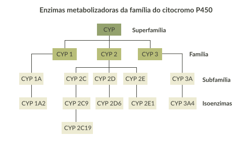

A biotransformação ou metabolização acontece principalmente no fígado, implicado em mais de 13.000 reações. Sua principal função é a de desintoxicação ou neutralização de produtos tóxicos do meio ou gerados pelo próprio organismo. Também conhecida como desintoxicação hepática, nesta etapa ocorrem dois processos enzimáticos: a fase I e a fase II.
Observe a imagem e clique em cada uma das fases.
Processos enzimáticos hepáticos de fase I e fase II.
Fase I - Oxidação, hidrólise e redução (enzimático)
As enzimas metabolizadoras pertencem à família do citocromo P450. Essas enzimas são importantes
para
transformar os produtos tóxicos em formas intermediárias e mais biodisponíveis para a fase II.


Fase II - Conjugação com metabólitos orgânicos (não enzimático)
Nesta fase, um composto químico altamente hidrossolúvel se liga ao medicamento já oxidado na fase
anterior, facilitando sua excreção pelo aumento de sua solubilidade. As enzimas e os compostos químicos
hidrofílicos correspondentes mais comuns são: